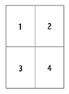

<!-- Documentation XQuad (c)1995-2000 AXENE contact axene@axene.org>
<html>

<head>
<title>Dialog Box: Print Setup</title>
</head>

<body BGCOLOR="#FFFFFF" BACKGROUND="Images/back.gif" TEXT="#000000">

<p ALIGN="right">  </p>

<p><br>
<br>
The <i>Print Setup</i> dialog box selects the printed features of a worksheet&#146;s page
layout.<br>
<br>
</p>

<hr>

<p align="center"><br>
 <br>
<small><i>Screen shot: Print setup dialog box</i></small></p>

<p><br>
</p>

<hr>

<p><br>
</p>

<h3>Left Portion of the Dialog Box:</h3>

<ul>
  <li><p align="center"> <a
    NAME="button_left_to_right">The <i>Print Left to Right</i> button selects the printing
    order for a table covering several pages. A two-by-two page table will be printed in the
    following order:</a><br>
    </p>
  </li>
  <li><p align="center"> <a
    NAME="button_up_to_down">The <i>Print Top to Bottom</i> button selects the printing order
    for a table covering several pages. A two-by-two page table will be printed in the
    following order:</a><br>
    </p>
  </li>
  <li> <a NAME="button_portrait">The
    <i>Portrait </i>button selects the page orientation for printing. The larger side of the
    paper corresponds to document height and the smaller side to document width.</a><br>
    &nbsp; </li>
  <li> <a NAME="button_landscape">The
    <i>Landscape</i> button selects the page orientation for printing. The smaller side of the
    paper corresponds to document height and the larger side to document width.</a><br>
    &nbsp; </li>
  <li><a NAME="button_reduction">The <i>Reduction</i> button reduces a table before printing.
    This value is expressed as a percentage and must be set between .1% and 1000%. A 10% value
    corresponds to reduction by a factor of 10, while 1000% corresponds to enlargement by a
    factor of 10.</a><br>
    &nbsp; </li>
  <li><a NAME="button_constraint">The <i>Constraint</i> button selects the number of pages
    over which the table will be printed. When this button is engaged the user may specify the
    number of pages over which the table will be printed both horizontally (left text field)
    and vertically (right text field). The two values are expressed in page numbers and must
    be set between one and 100. In doing so, this function automatically calculates reduction
    and enlargement factors both horizontally and vertically.</a></li>
</ul>

<p><br>
</p>

<h3>Right Portion of the Dialog Box:</h3>

<ul>
  <li><a NAME="section_format">The <i>Format </i>section determines the width and length of
    pages to be printed. These two values are expressed in centimeters and must be set between
    1 and 300 cm.</a><br>
    &nbsp; </li>
  <li><a NAME="section_margins">The <i>Top</i>, <i>Bottom</i>, <i>Left</i> and <i>Right</i>
    text fields of the <i>Margins</i> section determines respective margin dimensions for the
    top, bottom, left and right of the page. Margins are the non-printable space at the edge
    of a page. These values are expressed in centimeters and must be set between 0 and 150 cm.</a><br>
    &nbsp; </li>
  <li><a NAME="button_center_verticaly">The <i>Center Vertically</i> button vertically centers
    the table printed on each page in the space between the top and bottom margins.</a><br>
    &nbsp; </li>
  <li><a NAME="button_center_horizontaly">The <i>Center Horizontally</i> button horizontally
    centers the table printed on each page in the space between the left and right margins.</a><br>
    &nbsp; </li>
  <li><a NAME="button_print_grid">The <i>Print Grid</i> button determines whether or not the
    grid will be printed on each page. The grid uses fine lines to distinguish column and row
    separations.</a><br>
    &nbsp; </li>
  <li><a NAME="button_print_headers">The <i>Print Row and Column Headers</i> button determines
    whether or not row and column headers will appear upon printing. Column headers are cells
    at the top of a page containing a series of letters as coordinates . Row headers are cells
    at the left of the page containing a series of numbers as coordinates.</a></li>
</ul>

<p><br>
</p>

<h3>Lower Part of the Dialog Box:</h3>

<ul>
  <li><a NAME="button_ok"><i>&quot;Ok&quot;</i> closes the box, confirming all changes made to
    the worksheet's print setup. Making changes to print setup automatically causes </a><a
    href="Menu_View.html#page_separators_menu_entry">page separators to be displayed</a>. <br>
    &nbsp; </li>
  <li><a NAME="button_cancel"><i>&quot;Cancel&quot;</i> closes the box and cancels all changes
    to the print setup.</a></li>
</ul>

<p><br>
</p>

<hr>

<p ALIGN="right"></p>
</body>
</html>
